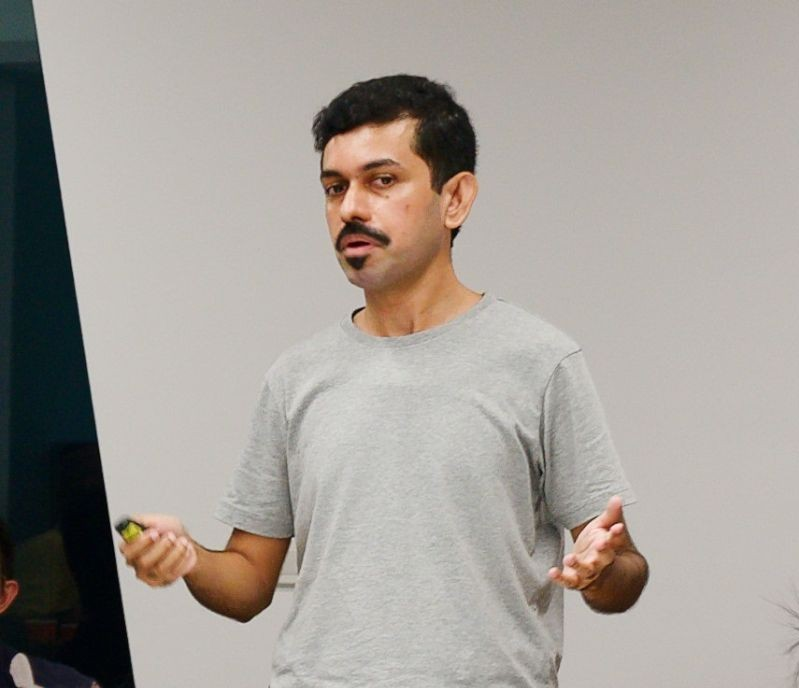

<!doctype html>
<html lang='en'>
<head>
  <meta charset='utf-8'>
  <meta name='viewport' content='width=device-width, initial-scale=1'>
  <title>Prasanta Bhattacharya — Academic Profile</title>
  <link rel='stylesheet' href='assets/css/style.css'>
  <meta name='description' content='Applied research scientist & innovation leader in AI, behavioral science, and network analytics.'>
</head>
<body>
<div class='progress' aria-hidden='true'></div>
<div class='wrapper'>
  <aside>
    
    <div class='aside__name'>Prasanta Bhattacharya</div>
    <div class='aside__role'>Innovation Lead & Senior Research Scientist | Behavioral Science, AI & Network Science | Executive Education, Strategy & Decision-making</div>
    <nav class='nav'>
      <a href='#about' class='active'>Home</a>
      <a href='#highlights'>Highlights</a>
      <a href='#projects'>Projects</a>
      <a href='#publications'>Publications</a>
      <a href='#teaching'>Teaching</a>
      <a href='#talks'>Talks</a>
      <a href='#contact'>Contact</a>
    </nav>
  </aside>
  <main>
    <section id='about' class='section'></section>
    <div id='sentinel' aria-hidden='true'></div>
  </main>
</div>
<footer class='small'>© <span id='y'></span> Prasanta Bhattacharya · <a href='https://scholar.google.com/citations?user=QgAw1m0AAAAJ&hl=en&oi=ao' target='_blank' rel='noopener'>Google Scholar</a> · <a href='https://www.linkedin.com/in/prasantabhattacharya/' target='_blank' rel='noopener'>LinkedIn</a>
  <div class='credit'>Site generated with assistance from Microsoft Copilot.</div>
</footer>
<script>document.getElementById('y').textContent=new Date().getFullYear();</script>
<script src='assets/js/main.js'></script>
</body>
</html>
